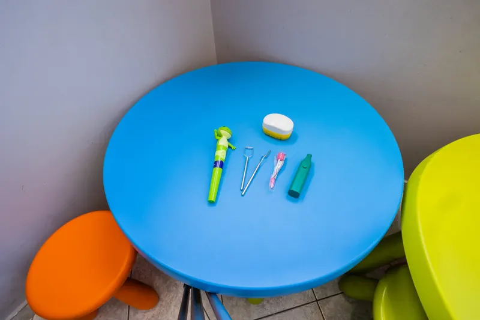

Επικοινωνία στην καθημερινή ζωή
Λογοθεραπεία
Στηρίζουμε την κατανόηση και την έκφραση του λόγου, την ομιλία και την επικοινωνία. Οι στόχοι συνδέονται με όσα χρειάζεται το παιδί για να εκφράζει τις ανάγκες του, να συζητά και να συμμετέχει.
Λόγος · Ομιλία · Επικοινωνία
Γνωρίστε τη θεραπεία